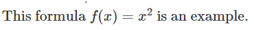
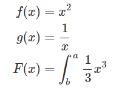
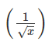
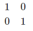
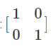
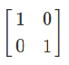

There are two major modes of typesetting math in LaTeX one is embedding the math
directly into your text by encapsulating your formula in dollar signs and the other
is using a predefined math environment. You can follow along and try the code in the
sandbox below. I also prepared a quick reference of math symbols.
To make use of the inline math feature, simply write your text and if you need to typeset a single math symbol or formula, surround it with dollar signs:
...
This formula $f(x) = x^2$ is an example.
...
Output equation : 
The most useful math envorinments are the equation environment for typesetting single equationsand the align environment for multiple equations and automatic alignment:
\documentclass{article}
\begin{{document}
\begin{equation*}
1 + 2 = 3
\end{equation*}
\begin{equation*}
1 = 3 - 2
\end{equation*}
\begin{align*}
1 + 2 &= 3\\
1 &= 3 - 2
\end{align*}
\end{document}
Output Equation :
1 + 2 = 3
1 = 3 − 2
Output Align :
1 + 2 = 3
1 = 3 − 2
The align environment will align the equations at the ampersand &. Single equations have to beseperated by a linebreak \\. There is no alignment when using the simple equation environment. Furthermore it is not even possible to enter two equations in that environment, it will result in acompilation error. The asterisk (e.g. equation*) only indicates, that I don't want the equations to be numbered.
LaTeX is capable of displaying any mathematical notation. It's possible to typeset integrals, fractions and more. Every command has a specific syntax to use. I will demonstrate some of the most common LaTeX math features:
\documentclass{article}
\usepackage{amsmaths}}}}
\begin{{document}
\begin{align*}
f(x) &= x^2
g(x) &= \frac{1}{x}
F(x) &= \int^a_b \frac{1}{3}x^3
\end{align*}
\end{document}
Output :

It is also possible to combine various commands to create more sophisticated expressions such as:
\frac{1}{\sqrt{x}}
Output :
The more complex the expression, the more error prone this is, it's important to take care of opening and closing the braces {}.
It can take a long time to debug such errors. The Lyx program offers a great formula editor, which can ease this work a bit.
Personally, I write all code by hand though, since it's faster than messing around with the formula editor.
Furthermore it's possible to display matrices in LaTeX. There is a special matrix environment for this purpose, please keep in mind that the matrices only work within math environments as describedabove:
\begin{matrix}
1 & 0//
0 & 1
\end{matrix}
Output : 
To surround the matrix by brackets, it's necessary to use special statements, because the plain [ ] symbols do not scale as the matrix grows. The following code will result in wrong brackets:
\begin{matrix}
1 & 0//
0 & 1
\end{matrix}
Output :
To scale them up, we must use the following code:
\left[
\begin{matrix}
1 & 0//
0 & 1
\end{matrix}
\right]
Output :
This does also work for parentheses and braces and is not
limited to matrices. It can be used to scale for fractions and other expressions as well:
\left(\frac{1}{\sqrt{x}}\right)
Output :